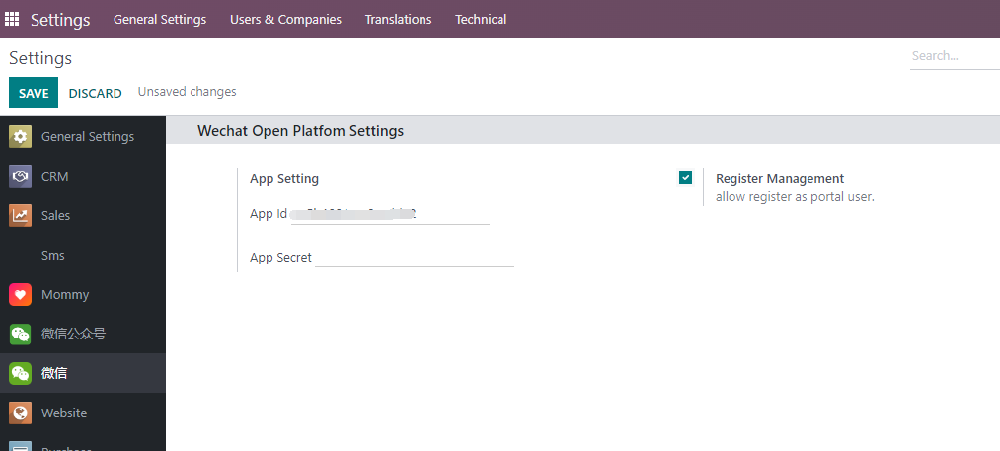
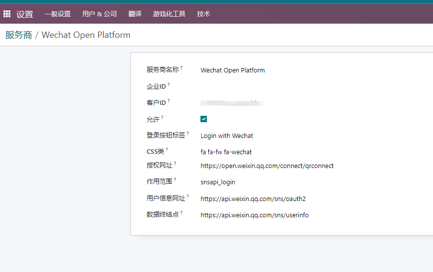

微信扫码登录
应用场景
本模块的使用场景是用户使用微信扫码通过微信开放平台OAuth认证登录Odoo系统。
先决条件
我们在安装微信扫码登录模块之前，需要到开放平台注册一个网站应用：

然后把获取到的APPID和SECRET填入到系统设置中。

配置微信扫码登录
设置好系统设置以后，到设置-用户-OAuth提供方菜单下找到Wechat Open Platform, 然后将应用APPID填入到客户ID中, 并勾选允许。

登录
然后我们可以退出系统， 可以看到在登录页面已经多出了一个使用微信登录对选项。